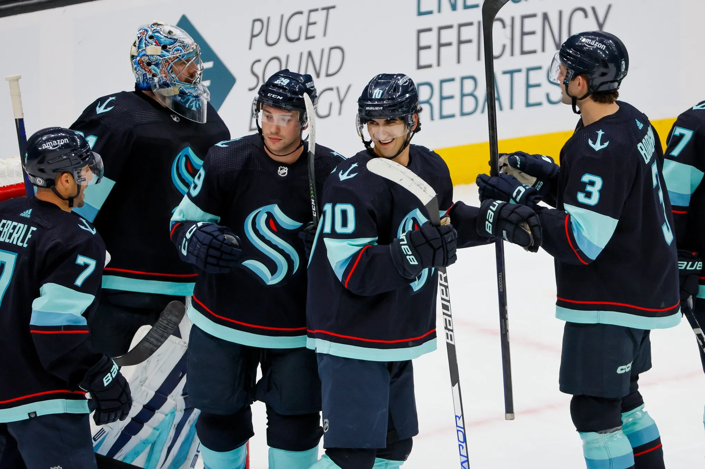
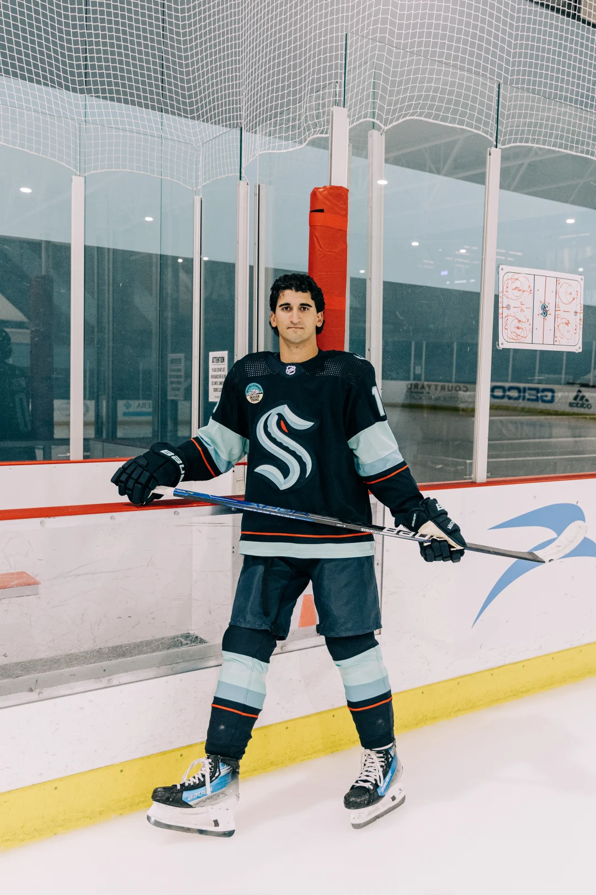
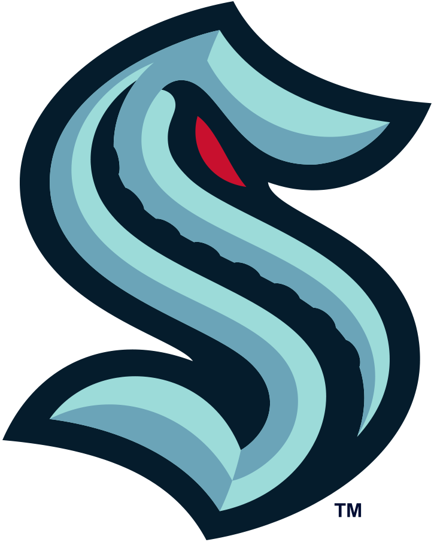
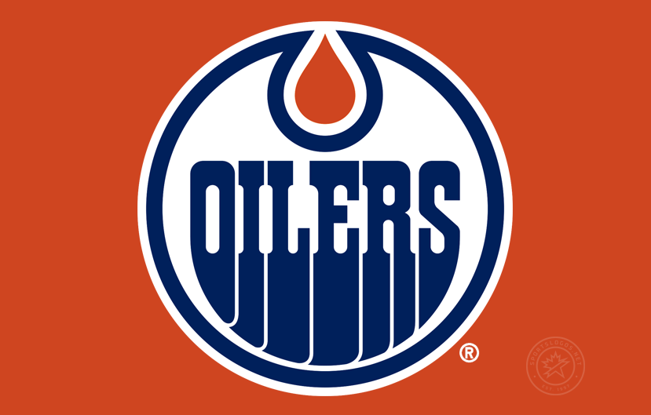
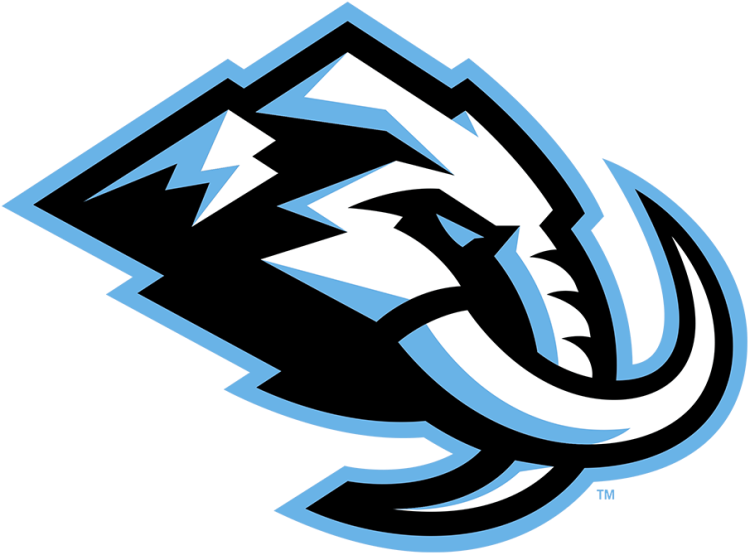
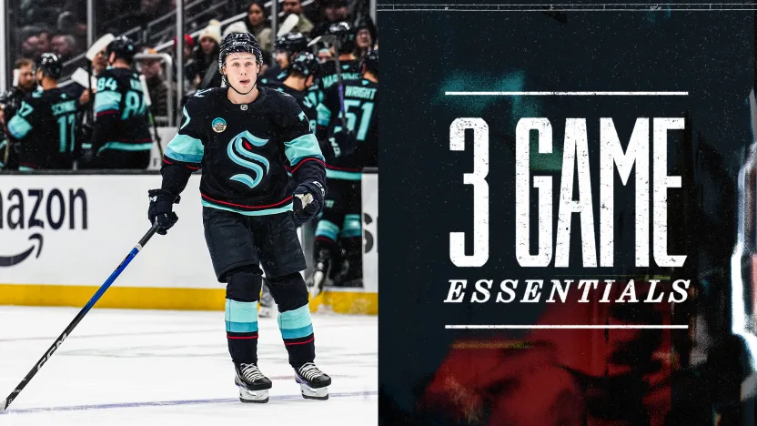
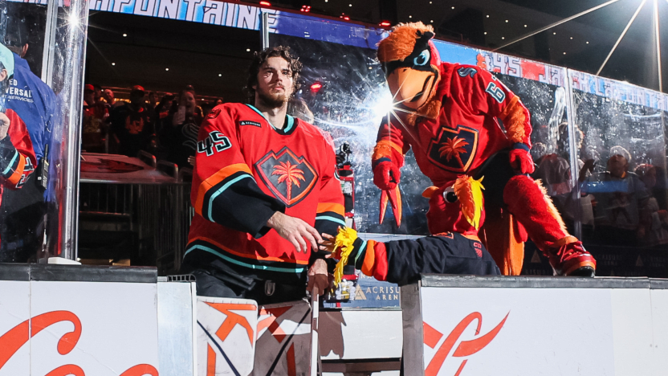
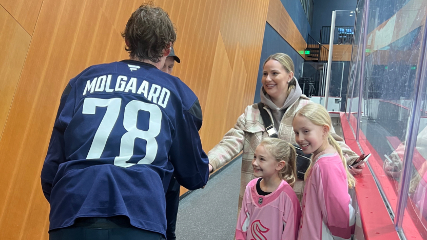

BEM VINDO AO
Seattle Kraken
O Kraken surgiu como a 32ª franquia da NHL, trazendo o hockey de volta a uma cidade que tem raízes profundas no esporte (o Seattle Metropolitans foi o primeiro time americano a vencer a Stanley Cup em 1917). A marca é uma das mais elogiadas do mundo: o logotipo em formato de "S" que esconde um olho e um tentáculo, somado às cores "Deep Sea Blue" e "Ice Blue", criou uma identidade visual instantaneamente icônica.
O time joga na Climate Pledge Arena, a primeira arena do mundo com certificação de emissão zero de carbono, o que combina muito com o clima tecnológico de Seattle. Diferente de outras expansões, o Kraken não apostou em uma única superestrela no início, mas sim em um elenco profundo e em métricas avançadas para sufocar os adversários com um jogo de transição rápida e pressão constante em todas as zonas do gelo.
Em 2026, a "Liberação do Kraken" (Release the Kraken) tornou-se um aviso de perigo para a Divisão do Pacífico. O time amadureceu e agora conta com jovens estrelas que são a cara da franquia, misturando a solidez tática que os levou aos playoffs precocemente com um brilho ofensivo que antes faltava. Seattle provou que o "mar" do noroeste pacífico é um território hostil para qualquer visitante.
CONHEÇA OS
JOGADORES

Matty Beniers
Central
2022–Atualmente
AGENDA
26

SEA 428
31

EDM 32

UTA4
6
NOTÍCIAS

Blackhawks (27-35-14) x Kraken (32-31-11) | 19h00
O Kraken vê uma oportunidade de interromper uma sequência de três derrotas contra um jovem time do Chicago, agora matematicamente eliminado dos playoffs. Além disso, espere uma abordagem diferente no power play do Seattle.

Leia tudo sobre este goleiro-acadêmico
O goleiro Jack LaFontaine é um dos principais vencedores de prêmios da NCAA, foi selecionado na terceira rodada do draft da NHL, contribuiu de forma estelar para as equipes Kraken da AHL e da ECHL e provavelmente é o jogador com a melhor leitura de jogo em todo o hóquei profissional.

Dinamarqueando a ocasião
Quando uma família dinamarquesa viajou para Seattle esta semana, as duas jovens jogadoras de hóquei ficaram impressionadas ao conhecerem Oscar Fisker Molgaard, o jogador central do Kraken.